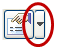

Conductor Table command bar
- Table Style
-
Lists and applies the available table styles.
See the Help topic, Table styles.
- Properties
-
Displays the Conductor Table Properties dialog box.

Saved Settings-
Lists and applies the names of table formats you have saved.
How do I
Create a conductor tableLook up more details
Creating conductor tablesConductor Table command
Related Topics
Conductor Table Properties dialog boxUpdate a conductor table